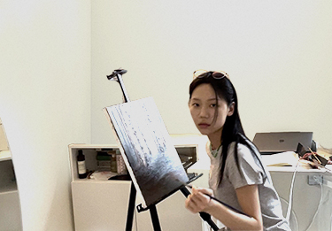
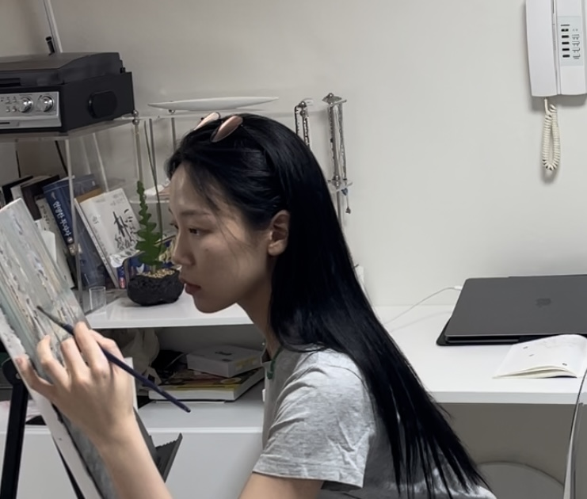
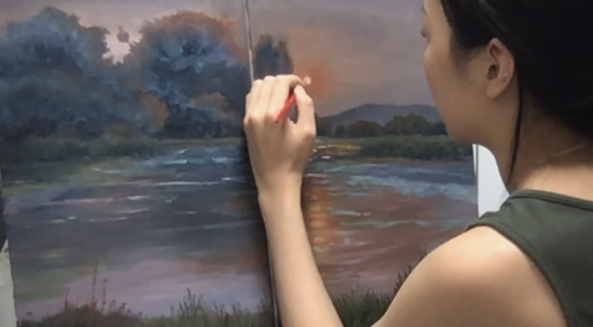

나는 호수, 나무, 바다, 하늘을 사랑한다 나는 자연을 느끼고 자연은
나를 그림그리게한다
시간의 흐름을 보는 일은 흥미롭고 온화하며,
나는 시시각각 변하는 찰나를 한 순간이라도 가지고 싶었다. 딱히 배우지
않았다 그냥 그려야했다.
이 순간 만큼은 나를 사랑하는 행위임을 알게되며, 온전히 내 마음에
집중하게 된다.

UX/UI 디자이너 및 퍼플리셔이자 그림을 그리는 나의 작업은 캔버스에
오일 작업을 주로 한다.
도슨트나 텍스트 없이 분위기가
전달되고 작가의 묘사가 공감을 얻을 수 있도록하며, 아름다움 그 자체에
대한 아름다움. "예술을 위한 예술(L'Art pour L'art")을 추구한다.
